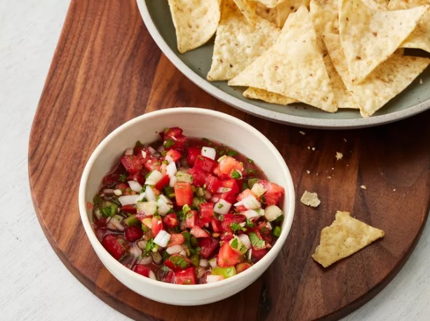

Tomato Salsa Recipe

Make this homemade salsa anytime with ripe tomatoes, onion, jalapeños, and a few other fresh ingredients. It's very popular. Serve with tortilla chips.
Ingredients
- 4 large ripe tomatoes, chopped
- 1 onion, chopped
- 1/2 cup chopped fresh caliantro
- 1 tomatillo, diced (optional)
- 3 cloves garlic, minced
- 1 tablespoon lime juice
- salt to taste
- 1 jalapeno pepper, minced
Directions
- Step 1Gather all Ingridients
- Step 2Combine tomatoes, onion, tomatillo, cilantro, garlic, lime juice, and salt in a medium-sized mixing bowl. Mix well.
- Step 3Add 1/2 of the jalapeño pepper and taste. If you desire your salsa with more kick, add remaining 1/2 jalapeño.
- Step 4Cover the salsa and chill until ready to serve.